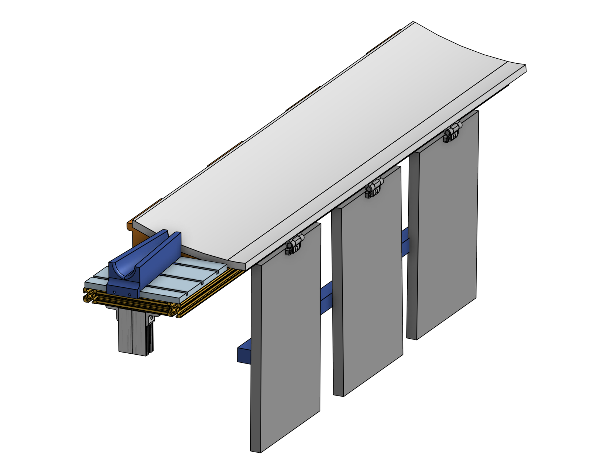
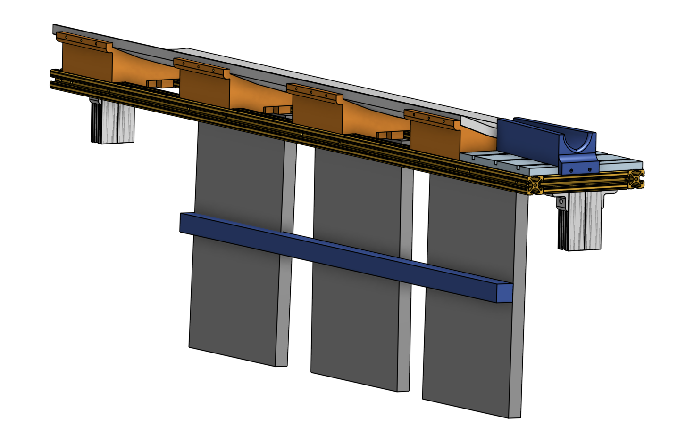
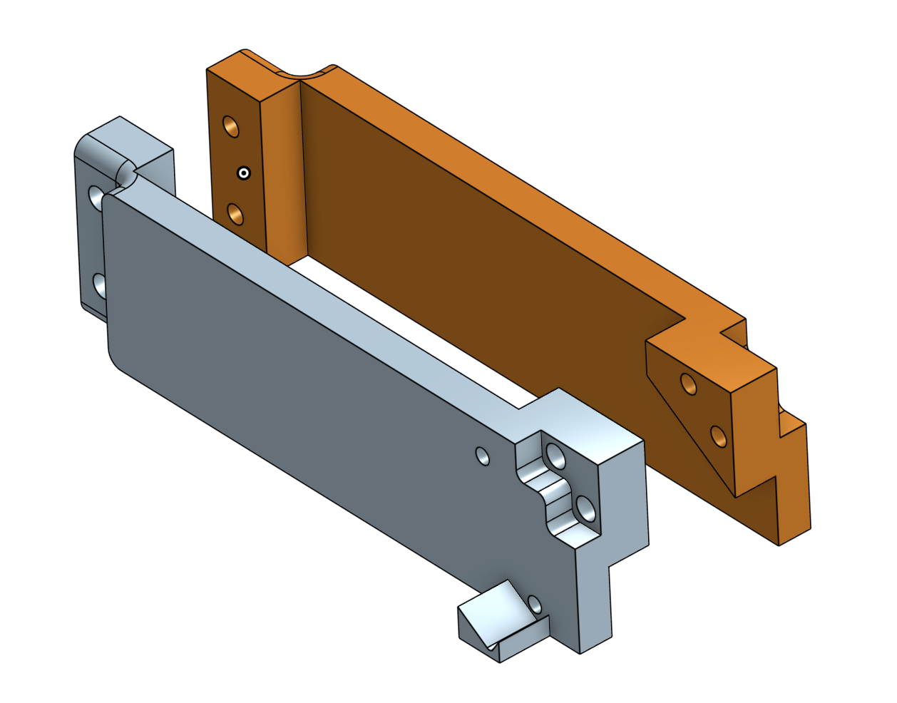
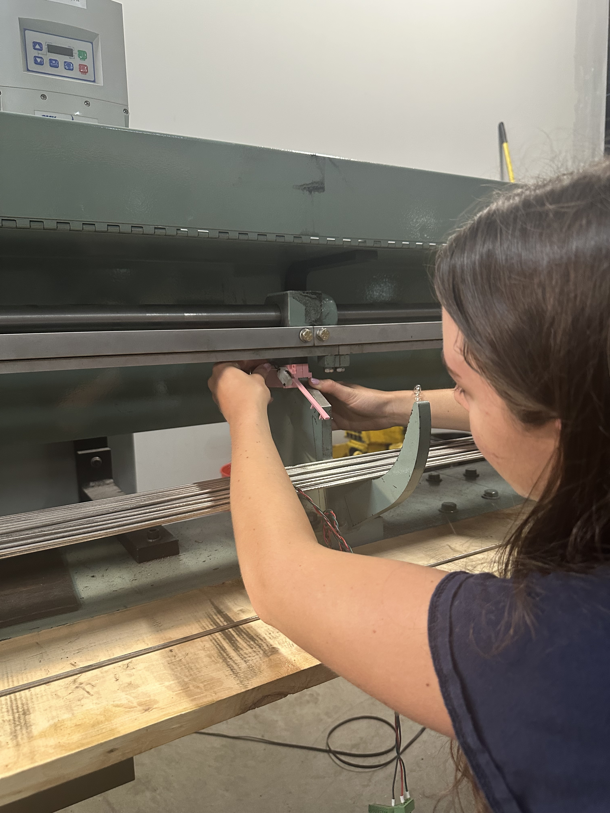

Centered Text
Boston Centerless manufactures and distributes precision raw materials. As an Engineering Intern, I developed, designed, and documented mechanical components and assemblies for CNC machines. Sensors mounts I designed were highly effective in increasing performance and efficiency on the shop floor. Additionally, I machined parts for use in manufacturing process. I also wrote standard operating procedures for equipment. For the manufactured pieces, I performed material testing and validation through heat treating and tensile testing.
Unload Fixture


I designed and assembled an unloader fixture that is connected to a grinding machine. The purpose of this is so that bars are guided out of the grinding machine and into a basket. I worked with a floor technician to understand the design constraints, sketched my ideas, and assembled a model on CAD. I then 3D printed my components and assembled them with pieces from McMaster. It is now successfully running on the shop floor.
Sensor Mount

I designed and assembled a mount for a sensor that counts bars after they are cut. The two pieces shown to the left envelop part of the machine itself. Using a combination of friction and heat-set inserts, the mount stays perfectly still as bars hit it. The success of my sensor mount allows for more precise counting of bars, enabling the machine to operate more efficiently and effectively by having an accurate head-count.
